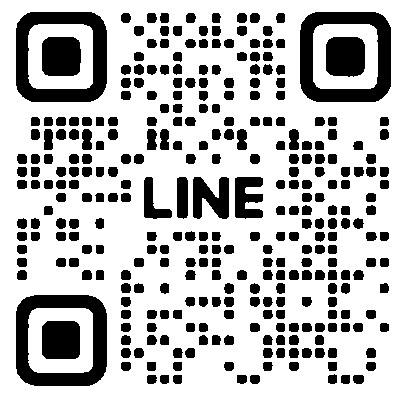

胃裡沒有食物，看得清楚，檢查也比較安全。
檢查前至少 8 小時不吃東西，
2 小時內不喝水。
前一天晚餐清淡，不喝酒。

官方 LINE @muzichengan腸子清乾淨，才看得到小瘜肉。
空腹時膽囊脹滿、腸氣較少，才看得清楚。
檢查前至少 8 小時不吃東西，
可以喝少量白開水。同一天也做胃鏡，
依胃鏡的規定。前一天晚餐清淡，避免油膩。
容易脹氣的人，檢查前 1 至 2 天少吃
豆類、洋蔥、奶製品、碳酸飲料與氣泡水。
穿兩截式寬鬆衣物，方便露出腹部。
避免連身裙、緊身衣物與金屬腰帶。
胃鏡後喉嚨痛、脹氣；大腸鏡後腹脹、
排氣多。走動、排氣後會改善，
通常一兩天內恢復。
傷口約 1 至 2 週癒合，這段時間仍可能出血。
當天吃清淡、好消化的食物；
隔天沒有不適，就恢復平常飲食。
一週內不喝酒。
1 至 2 週內避免劇烈運動、提重物與
長途旅行，實際天數醫師會另外告訴你。
約 1 至 2 週出爐，下次大腸鏡依結果決定：
| 病理結果 | 下次大腸鏡 |
|---|---|
| 1 至 2 顆管狀腺瘤，都小於 1 公分 | 7 至 10 年 |
| 3 至 4 顆管狀腺瘤，都小於 1 公分 | 3 至 5 年 |
| 5 至 10 顆，或任一顆 1 公分以上， 或有絨毛狀變化、高度分化不良 | 3 年 |
| 鋸齒狀病灶、分片切除 | 醫師另外說明 |
以清腸乾淨、完整切除為前提。資料來源：USMSTF，Gastroenterology 2020。
幾天內可能有脹感或少量出血，通常會逐漸改善。
肛門脹感、輕微疼痛、排便時少量出血，
會逐漸改善。痔瘡日後仍可能復發，
好的排便習慣最重要。
結紮處約 1 週脫落，傷口約 2 至 4 週癒合。
制酸藥幫助傷口癒合，請依指示服用，
不要自行停藥。
胸口悶痛或灼熱、吞嚥卡卡、喉嚨痛，
多在數天內減輕。
約 1 至 3 個月後回診評估。
整個療程按時吃完，是除菌成功最重要的一步。
服藥期間與吃完後 3 天內不喝酒，
部分抗生素遇到酒精會噁心、臉潮紅。
資料來源：Maastricht VI／Florence 共識，Gut 2022；Taipei Global Consensus，Gut 2020。